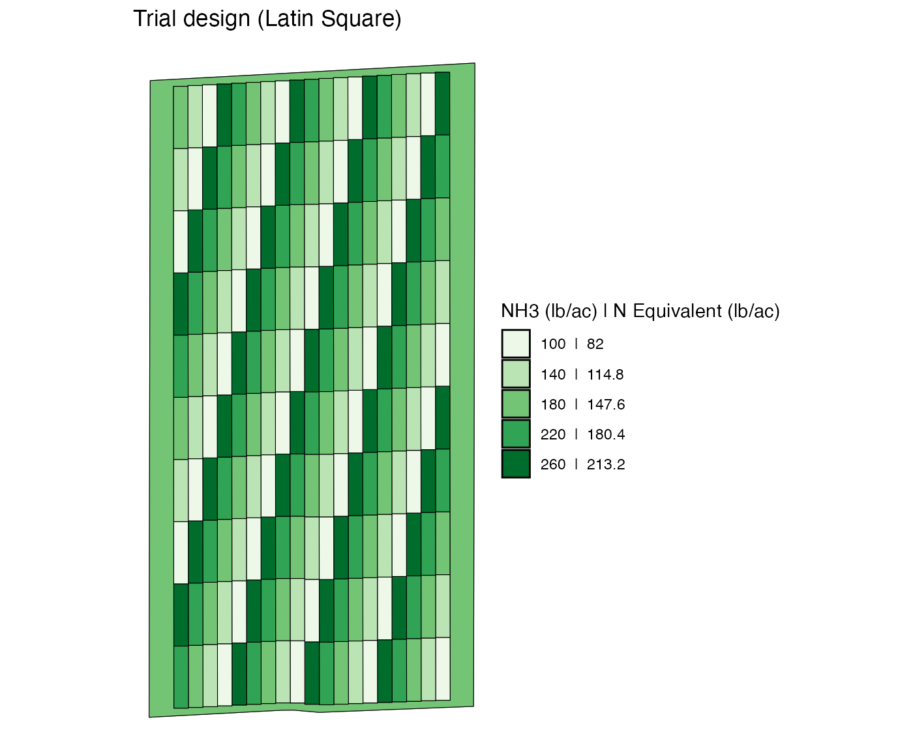
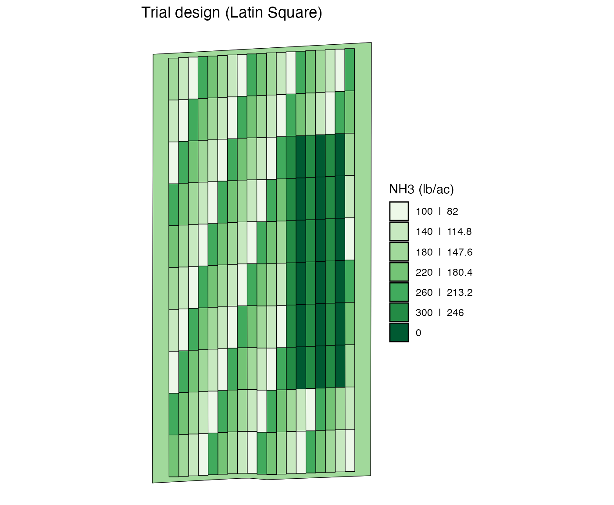
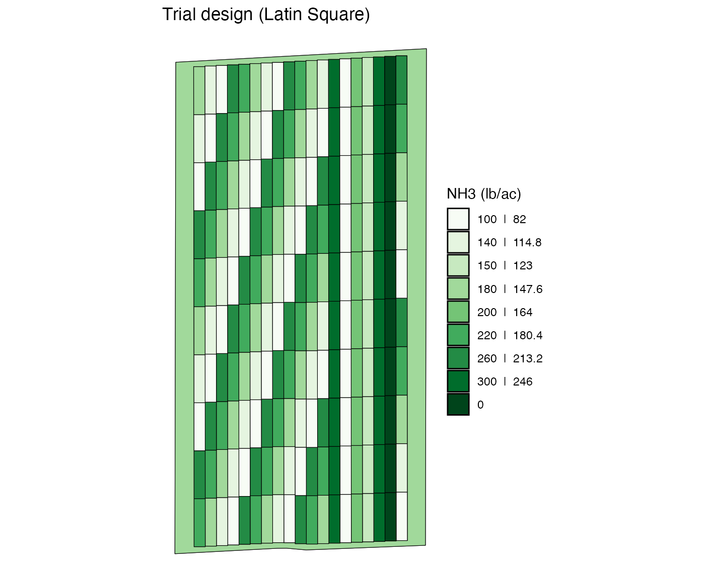
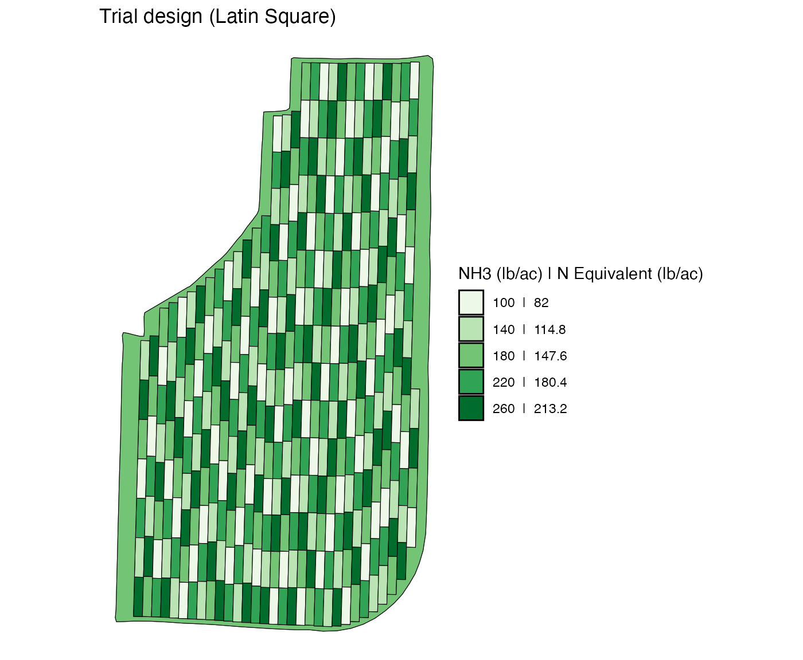
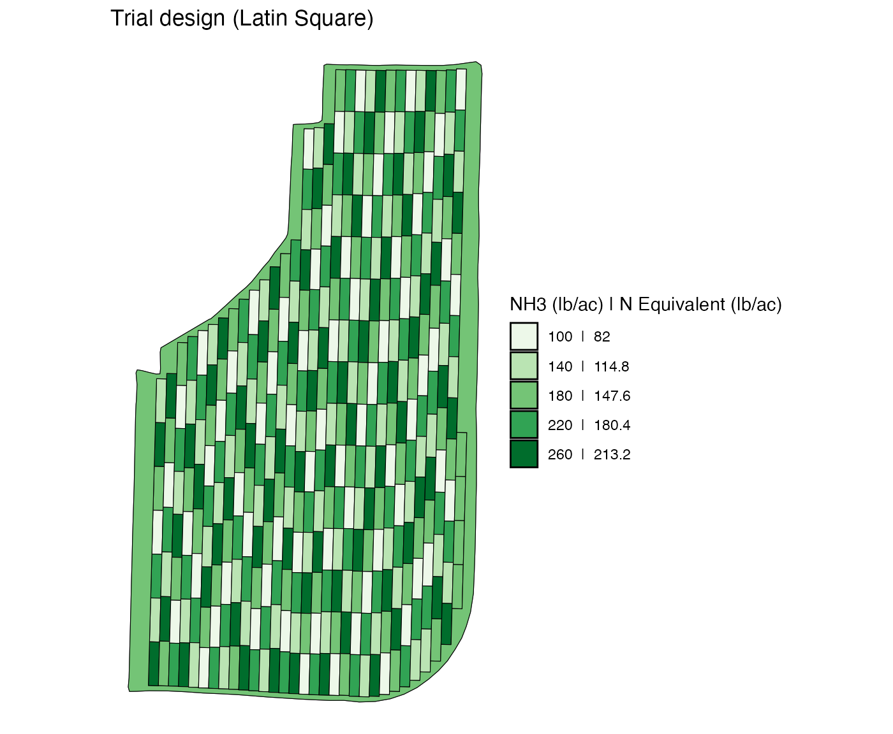
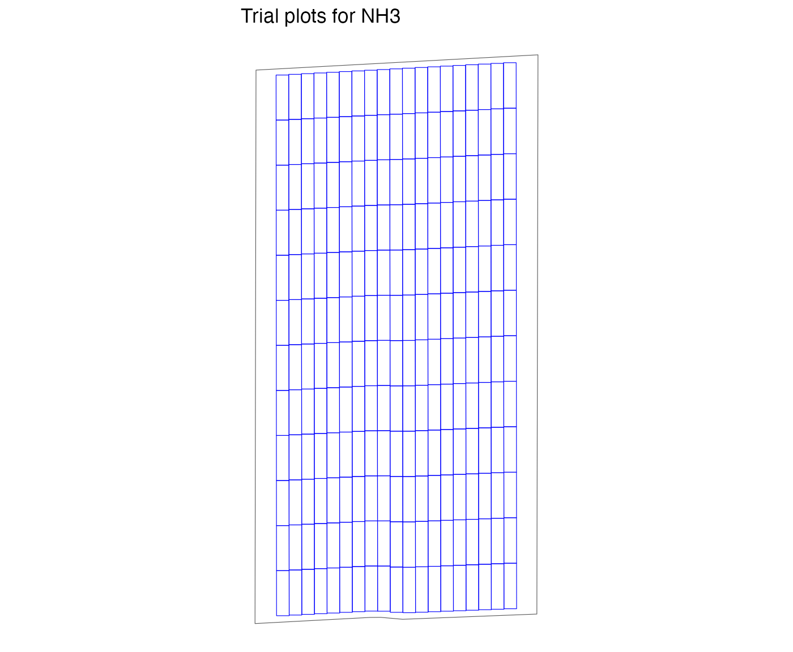
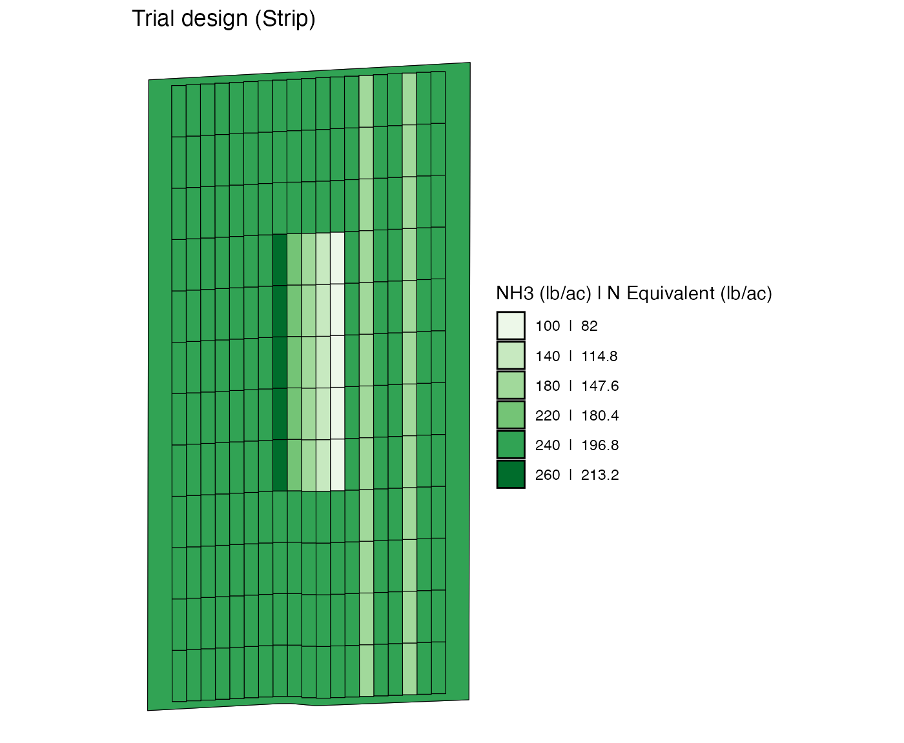

Change Trial Rates Manually
Source:vignettes/articles/V3-change-rates-manually.Rmd
V3-change-rates-manually.RmdSuppose you have created a trial design applying
assign_rates() to experiment plots made by
make_exp_plots(), but you are not quite satisfied with it
and would like to change rates here and there. You can easily do so
manually using the change_rates() function. This vignette
demonstrates such operations.
Data Preparation
Let’s first create a trial design for a single input case.
n_plot_info <-
prep_plot(
input_name = "NH3",
unit_system = "imperial",
machine_width = 30,
section_num = 1,
harvester_width = 20,
headland_length = 30,
side_length = 60
)
exp_data <-
make_exp_plots(
input_plot_info = n_plot_info,
boundary_data = system.file("extdata", "boundary-simple1.shp", package = "ofpetrial"),
abline_data = system.file("extdata", "ab-line-simple1.shp", package = "ofpetrial"),
abline_type = "free"
)
#> Linking to GEOS 3.11.0, GDAL 3.5.3, PROJ 9.1.0; sf_use_s2() is TRUE
#> Warning: There was 1 warning in `dplyr::mutate()`.
#> ℹ In argument: `experiment_plots_dissolved = list(...)`.
#> ℹ In row 1.
#> Caused by warning:
#> ! package 'sf' was built under R version 4.2.3
n_rate_info <-
prep_rate(
plot_info = n_plot_info,
gc_rate = 180,
unit = "lb",
rates = c(100, 140, 180, 220, 260),
design_type = "ls",
rank_seq_ws = c(1, 2, 3, 4, 5),
rank_seq_as = c(1, 2, 3, 4, 5)
)
td <-
assign_rates(
exp_data = exp_data,
rate_info = n_rate_info
)Here is what the trial design looks like.
viz(td, type = "rates")
Changing rates
It is important to be aware that every single plot is assigned a
withint-strip plot id and a strip id when they were created using
make_exp_plots().
td$trial_design[[1]]
#> Simple feature collection with 191 features and 4 fields
#> Geometry type: POLYGON
#> Dimension: XY
#> Bounding box: xmin: -16.70078 ymin: 39.11957 xmax: -16.69604 ymax: 39.12696
#> Geodetic CRS: WGS 84
#> First 10 features:
#> rate strip_id plot_id type geometry
#> 1 100 1 1 experiment POLYGON ((-16.6964 39.11976...
#> 2 140 1 2 experiment POLYGON ((-16.6964 39.12047...
#> 3 180 1 3 experiment POLYGON ((-16.6964 39.12118...
#> 4 220 1 4 experiment POLYGON ((-16.6964 39.12189...
#> 5 260 1 5 experiment POLYGON ((-16.6964 39.1226,...
#> 6 100 1 6 experiment POLYGON ((-16.6964 39.12331...
#> 7 140 1 7 experiment POLYGON ((-16.6964 39.12402...
#> 8 180 1 8 experiment POLYGON ((-16.69641 39.1247...
#> 9 220 1 9 experiment POLYGON ((-16.69641 39.1254...
#> 10 260 1 10 experiment POLYGON ((-16.69641 39.1261...The figure below shows the strip id associated with each plot.
viz(td, type = "strip_id")
#> Warning: Removed 1 row containing missing values or values outside the scale range
#> (`geom_text()`).
The figure below shows the plot id associated with each plot.
viz(td, type = "plot_id")
#> Warning: Removed 1 row containing missing values or values outside the scale range
#> (`geom_text()`).
As you can see, plot_id is the unique numeric identifier
assigned to each of the plots within a strip. So, there
are multiple plots with the same plot_id values, but a
combination of strip_id and plot_id uniquely
identifies a plot.
Re-assign a single rate to all the specified plots
You can use change_rates() to change rates. The code
below change the rate asscociated the plot with
strip_id = 1 and plot_id = 1 (left bottom
cell) to 0.
modified_td <-
change_rates(
td = td,
input_name = "NH3",
strip_ids = 1,
plot_ids = 1,
new_rates = 0
)
viz(modified_td, type = "rates")
You can change rates of multiple plots with the same
plot_id across multiple strip_ids.
change_rates(
td,
input_name = "NH3",
strip_ids = 1:10,
plot_ids = 10,
new_rates = 0
) %>%
viz(abline = FALSE)
When you give vectors of values to stip_ids and
plot_ids, the plots with all the possible combinations of
strip_id-plot_id are going to have a new
rate.
change_rates(
td,
input_name = "NH3",
strip_ids = 1:10,
plot_ids = c(1, 5, 9, 14, 19, 24),
new_rates = 0
) %>%
viz(abline = FALSE)
If you do not provide any plot_ids, then all the plots
in the strips specified by strip_ids will be altered.
change_rates(
td,
input_name = "NH3",
strip_ids = c(1, 4, 7, 10, 13, 16),
new_rates = 0
) %>%
viz(abline = FALSE)
Re-assign multiple rates by strip
You can also change the rate of multiple plots across multiple strips
by strip using the rate_by = "strip" option. In this case,
nth element of new_rates will be assigned
to nth strip in strip_ids.
change_rates(
td,
input_name = "NH3",
strip_ids = 2:7,
plot_ids = 3:8,
new_rates = c(0, 300, 0, 300, 0, 300),
rate_by = "strip"
) %>%
viz(abline = FALSE)
If you leave plot_ids unspecified, all the plots in the
strips specified by strip_ids will be assigned new rates.
That is, rates are re-assigned by strip.
change_rates(
td,
input_name = "NH3",
strip_ids = 2:7,
new_rates = c(0, 300, 150, 200, 100, 300),
rate_by = "strip"
) %>%
viz(abline = FALSE)
The rate_by = "strip" can be useful when you want to
“remove” some plots from the experiment. For example, take a look at
this trial design.

Notice that there is a three-plot strip at the east end of the field. Suppose, you would like to “remove” it from experiments (there is nothing wrong with keeping them as part of the experiment). You can do so by assining the rate for the non-experimental part of field (which is 180) to the strip.
change_rates(
td_curved,
input_name = "NH3",
strip_ids = 31,
new_rates = 180,
rate_by = "strip"
) %>%
viz(abline = FALSE)
Re-assign multiple rates by plot
You can assign new rates plot by plot at one time using the
rate_by = "plot" option. For this option, you are asked to
provide a matrix of rates where rows and columns of the matrix
represents plot_ids and strip_ids,
respectively. For example, suppose you have
plot_ids = c(2, 4, 6) and
strip_ids = c(1, 3, 5, 7). Further suppose, you have
specified new_rates like below.
(
new_rates <- matrix(1:12 * 20, nrow = 3, ncol = 4)
)
#> [,1] [,2] [,3] [,4]
#> [1,] 20 80 140 200
#> [2,] 40 100 160 220
#> [3,] 60 120 180 240Then, the plot with plot_id = 2 (1st element of
plot_ids) and strip_id = 1 (1st element of
strip_ids) will get the value stored in
new_rates[1, 1] (1st row and 1st column of the matrix of
rates).
The code below assign randomized rates to the 5-plot by 5-plot block at the left lower corner of the field.
new_rates_mat <- replicate(5, sample(c(100, 140, 180, 220, 260), 5))
change_rates(
td,
input_name = "NH3",
strip_ids = 1:5,
plot_ids = 1:5,
new_rates = new_rates_mat,
rate_by = "plot"
) %>%
viz(abline = FALSE)
If you would like, you could repeat this to other blocks of plots to
generate a randomized block design. Of course, it is much easier to just
use the “rb” option in assign_rates().
Application: Precision Nitrogen Project (PNP) at University of Nebraska Lincoln
Here, we apply what we have learned so far to create a trial design like the ones used in Puntel, Thompson, and Mieno (2024).
n_plot_info <-
prep_plot(
input_name = "NH3",
unit_system = "imperial",
machine_width = 60,
section_num = 1,
harvester_width = 30,
headland_length = 30,
plot_width = 60,
min_plot_length = 200,
max_plot_length = 300
)
#>
exp_data <-
make_exp_plots(
input_plot_info = n_plot_info,
boundary_data = system.file("extdata", "boundary-simple1.shp", package = "ofpetrial"),
abline_data = system.file("extdata", "ab-line-simple1.shp", package = "ofpetrial"),
abline_type = "free"
)
viz(exp_data, type = "layout")
n_rate_info <-
prep_rate(
plot_info = n_plot_info,
gc_rate = 240,
unit = "lb",
rates = 240,
design_type = "str"
)
td <-
assign_rates(
exp_data = exp_data,
rate_info = n_rate_info
)
viz(td, type = "rates")
td <-
change_rates(
td,
strip_ids = c(3, 6),
new_rates = 180
)
viz(td, type = "rates")
td <-
td %>%
change_rates(
strip_ids = 8:12,
plot_ids = 5:9,
new_rates = c(100, 140, 180, 220, 260),
rate_by = "strip"
) %>%
change_rates(
strip_ids = 8:12,
plot_ids = 15:19,
new_rates = c(140, 260, 100, 180, 220),
rate_by = "strip"
) %>%
change_rates(
strip_ids = 8:12,
plot_ids = 25:29,
new_rates = c(220, 100, 260, 220, 180),
rate_by = "strip"
)
viz(td, type = "rates")
td <-
change_rates(
td,
strip_ids = c(15, 16),
new_rates = 180
)
viz(td, type = "rates")